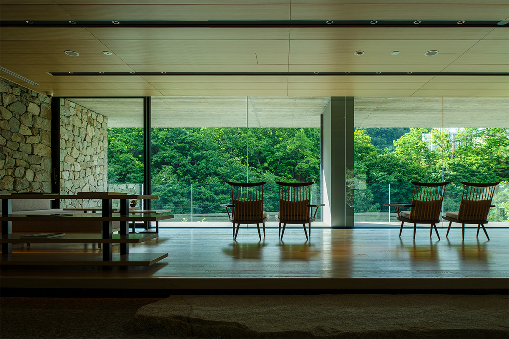
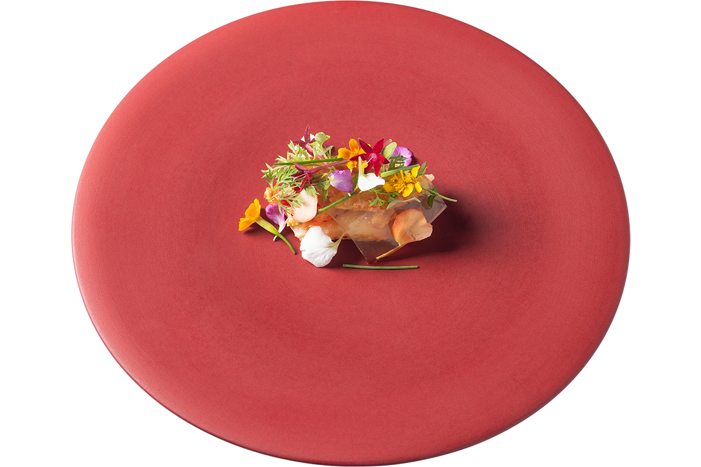
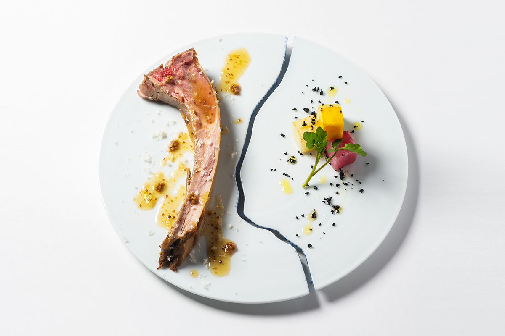
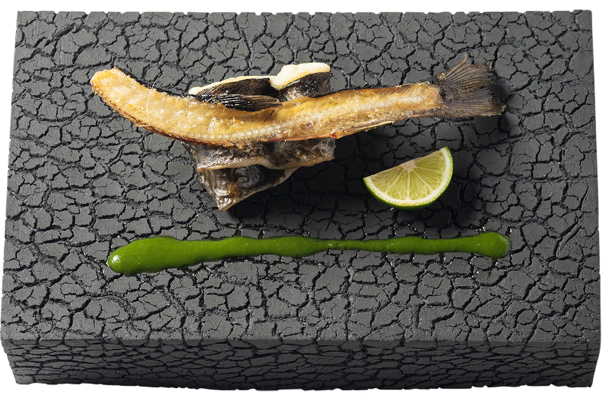
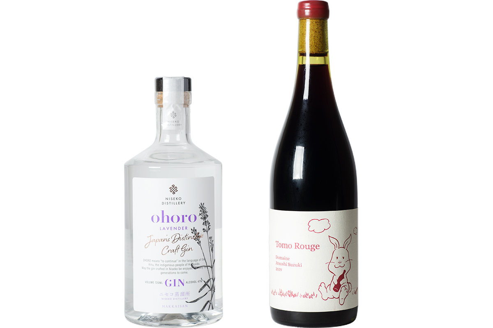
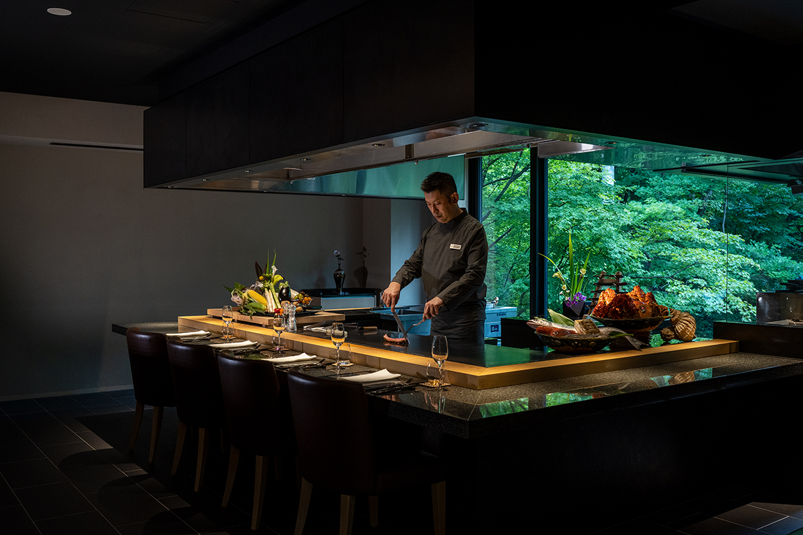
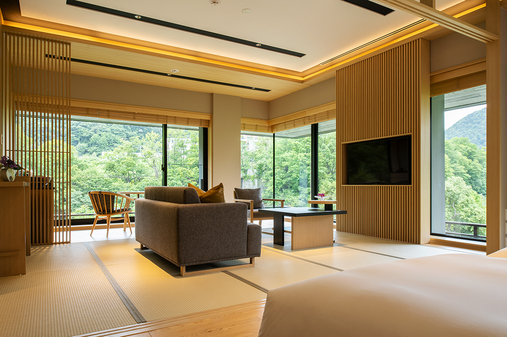
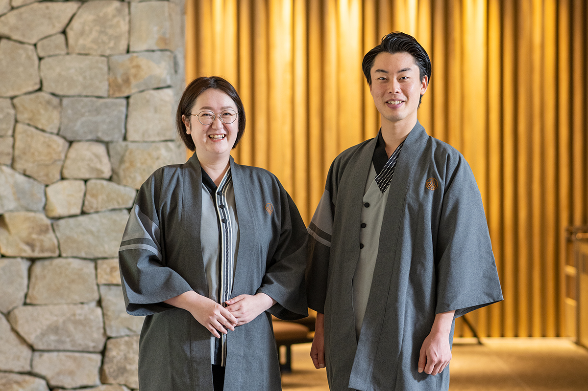
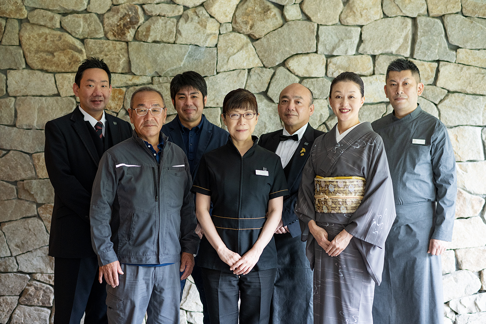
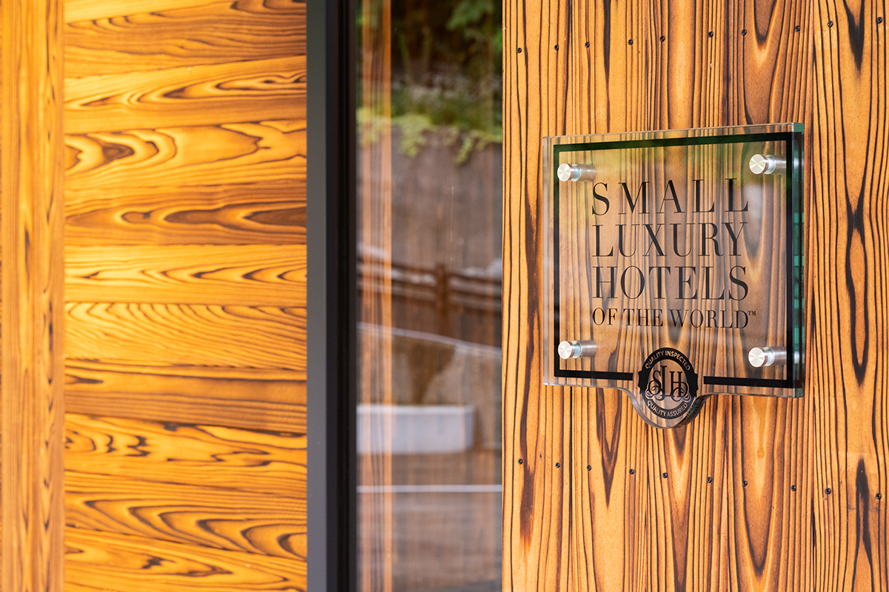

Префектура Хоккайдо · Дзёзанкэй · рёкан
Chalet Ivy Jozankei: рёкан в долине Дзёзанкэй, где ужин превращается в спектакль

Chalet Ivy Jozankei открылся в 2019 году в Дзёзанкэе, тихой онсэн-деревне в горах за Саппоро, и быстро стал одним из лучших отелей острова. Гости уезжают отсюда с мыслью «хочу вернуться и снова здесь поесть», и у этого есть объяснение.
Отель
Сначала понравиться японцам
Дзёзанкэй называют «внутренней гостиной» Саппоро: онсэн-курорт в долине реки Тоёхира, примерно в 45 минутах езды на машине от вокзала Саппоро. Chalet Ivy Jozankei стоит здесь у самой реки. За первые три года после открытия в 2019 году отель, вопреки ожиданиям, принимал больше гостей из Японии, чем из-за рубежа. Для проверки качества это оказалось даже кстати.
«Мы ждём гостей со всего мира. Но у нас очень японский по духу отель, и сначала его качество должны признать сами японцы»
генеральный управляющий отеля
Лучше всего о том, что это удаётся, говорят постоянные гости: их становится всё больше. Хвалят и мягкую воду онсэна, и многое другое, но главное здесь кухня.
Кухня
Хоккайдо как место, куда едут за блюдами
Шеф-повар отеля пришёл из Nadaman, одного из старейших ресторанов японской кухни. Можно ждать строгой классики, но он следит за трендами любых кухонь и выстраивает ужин целиком, как постановку.
«Если говорить о том, как доставить гостю удовольствие, тут сильнее европейская кухня»
шеф-повар отеля
Вот пример. На стол ставят красную тарелку, на ней лежит панцирь краба. В первую секунду в голове одни вопросы. Но под панцирем прячется тонкое крабовое блюдо, украшенное съедобными цветами, и тут понимаешь, что тебя ловко разыграли.

Почти все продукты здесь с Хоккайдо, и у каждого своя история. Готовят их довольно просто: отваривают, запекают. Главная забота шефа в другом: превратить продукт в весёлое и вкусное блюдо, в котором его достоинства чувствуются в несколько раз сильнее.

Хоккайдо обычно представляют местом, куда едут за морепродуктами и овощами. Шеф хочет, чтобы сюда ехали за блюдами.
«Буду рад, если моя кухня поднимет ценность продуктов Хоккайдо, а вместе с ними и ценность кухни Хоккайдо»
шеф-повар отеля

Уверенная техника и игра на тарелке делают ужин лучшим развлечением вечера. Ради этих часов за столом люди, видимо, и возвращаются в отель снова.


О винокурне в Нисэко мы рассказываем отдельно: NISEKO DISTILLERY.
Номера
Японский уют и река под окном
Во всех номерах есть открытая купальня с онсэном, из которой через реку видна зелень противоположного берега. Даже стандартный люкс Deluxe Suite просторен: от 67 до 70 м². Угловой люкс Corner Suite ещё больше, 72 м², и из него широко видно течение Тоёхиры.

Юкаты для гостей и форму персонала придумали в духе «современной японской» одежды. Ткань у юкаты плотная, так что в ней удобно выйти погулять по онсэн-деревне. Форма сочетает японский облик и практичность. И то и другое создал дизайнер из саппорской компании cloud 9. Ещё одна причина вернуться сюда: забота персонала, внимательного к мелочам.
В 2021 году отель приняли в Small Luxury Hotels of the World, объединение небольших независимых отелей класса люкс с ярким характером.



Chalet Ivy Jozankei
- Адрес
- префектура Хоккайдо, Саппоро, район Минами, Дзёзанкэй-онсэн-Хигаси, 3-231
- Телефон
- +81 11-595-2088
- Номера
- 26
- Цены / Вход
- от 58 500 иен за ночь с ужином и завтраком (налоги, сервисный сбор и курортный налог включены)
- Заезд / выезд
- 15:00 / 11:00
- Как добраться
- около 45 минут на машине от станции JR Саппоро; или автобусом «Каппа Лайнер» (по предварительной записи) до остановки «Дзёзанкэй-дзиндзя-маэ», оттуда около 3 минут пешком
- Сайт
- chaletivy.com
Фото: Кэй Фурусэ.